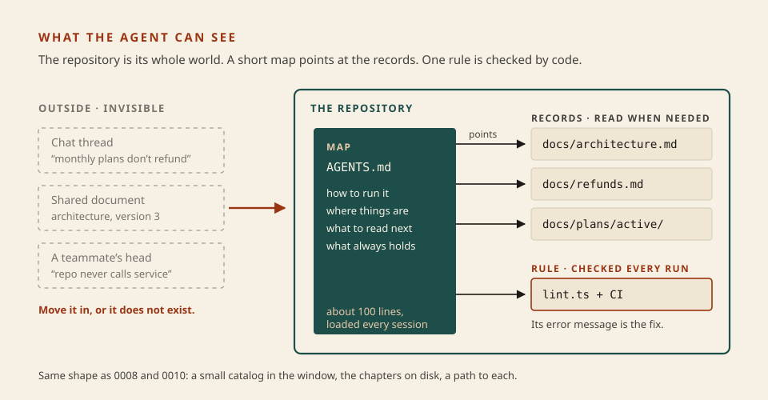
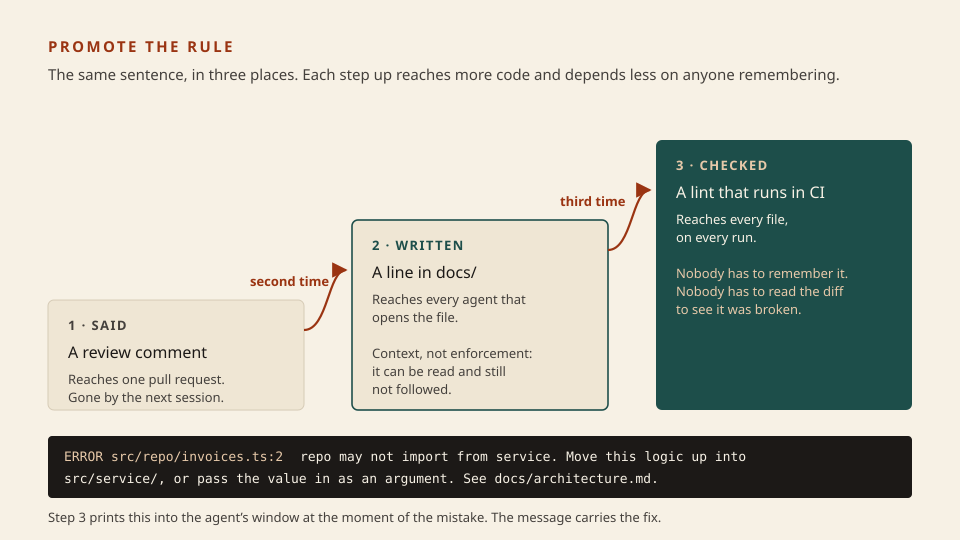

Software factory
A repo agents can read
Lesson 0023 built the exam room. Tonight is the other room, the one the builder works in. An agent that runs for hours without you knows only what is in the repository. So when it gets something wrong, the useful question is not “how do I prompt it better” but what was missing from the repo, and which of three places does the fix belong in?
What this is. How to lay out a repository so an agent can orient itself, and how to turn a correction you keep repeating into something that no longer needs you. The fullest public account is OpenAI’s report on a product built with no hand-typed code, where the team’s job became asking what capability the agent lacked and how to make it both readable and enforceable. OpenAI · Harness engineering
What this is not. A new idea. It is 0008 (a small catalog, chapters on disk), 0010 (keep a path, not a page) and 0015 (write the floor once) applied to a whole repository, plus one step those lessons did not take: prose that keeps failing gets promoted into code. Not a replacement for the holdout either. Everything here sits in the builder’s room, where the builder can read and edit it.
- 1 · RecordIf it is not in the repo, it does not exist.
- 2 · MapA short file that points; it does not explain.
- 3 · RuleWhat keeps breaking becomes a check that teaches.
Could it see it? Could it find it? Did it know and drift anyway?

Architecture first. The map is the only part loaded every session. Everything else is reached by a path.
Three places a fix can go
- Record The knowledge itself, as versioned files next to the code: the layering, the refund policy with worked numbers, the plan in progress and the decisions made so far. The OpenAI team’s test is the new hire who joins three months later: a decision made in a chat thread is as unknown to the agent as it would be to that person. Their records live in a
docs/folder with plans checked in beside the code. - Map The one file the harness loads every session. That team first tried one large
AGENTS.mdand reports it failed four ways: it crowded the task out of the window, marking everything important made nothing important, it went stale, and one blob could not be checked by a machine. Their rule now: “give Codex a map, not a 1,000-page instruction manual.” The file is about a hundred lines and mostly pointers. - Rule A check that runs on every file. Their layering (types, then config, repo, service, runtime, UI, each depending only on what came before) is enforced by custom linters and structural tests, and because the linters are their own, the error text is written to tell the agent how to repair the violation.
A second vendor says the same about its own file. Claude Code’s documentation describes CLAUDE.md as context rather than enforced configuration, suggests keeping it under 200 lines because longer files are followed less reliably, and sends you to a hook when something must be blocked no matter what the model decides. Its advice on when to add a line is a good habit to borrow: when the agent makes the same mistake a second time. Claude Code · How Claude remembers your project
The map for the billing assistant · 21 lines
# Billing assistant Answers refund and invoice questions over HTTP. Postgres holds invoices. Stripe moves money. ## Run - `npm run lint` layering check. Fix every ERROR before you finish. - `npm test` unit tests. ## Where things are - `src/types/` shapes only, no logic - `src/repo/` database reads and writes - `src/service/` business rules; the pro-rata maths lives here - `src/http/` routes and sessions ## Read before you change - Layering, and what to do when it gets in your way: `docs/architecture.md` - Refund rules with worked numbers: `docs/refunds.md` ## Always - Money moves only through `src/service/refunds.ts`. - A task is done when lint and tests print no ERROR.
What this shows. Four jobs and nothing else: how to run it, where things are, what to read next, what always holds. The refund policy is not in this file; a path to it is. The layering is named in one line and explained elsewhere. If you catch yourself pasting a paragraph of explanation here, it belongs in a record and the map gets one more pointer. The real files are in code/0024-a-rule-that-teaches/repo/.
When writing it down is not enough
The record says the repo layer never imports from the service layer. An agent reads that on Monday and on Thursday, deep in a different task, puts the pro-rata maths behind a database helper anyway. A doc line can be read and still not followed. The OpenAI report’s answer is short: when documentation falls short, promote the rule into code. Review comments and bugs get captured as doc updates first, and as tooling when that does not hold.

Promote on repetition. Most corrections never need step 3. The ones that keep coming back do.
The same violation · two messages
# WRITTEN FOR A HUMAN WHO KNOWS THE CODEBASE src/repo/invoices.ts:2 error no-restricted-imports # WRITTEN FOR AN AGENT THAT STARTED TEN MINUTES AGO (one line in the terminal) ERROR src/repo/invoices.ts:2 repo may not import from service (src/service/refunds.ts). Layers only look left: types -> repo -> service -> http. Either move this logic up into src/service/, or have service pass the value in as an argument. See docs/architecture.md. 2 errors in 5 files.
What this shows. Both lines fail the build. Only the second lets the builder fix the cause. Faced with the first, an agent has an error code and a goal of “make lint pass,” and the cheapest way to do that is to silence the rule. The second names what is wrong, what to do instead, and where the reasoning lives, so the pointer in the message does the map’s job at the exact moment it is needed. The shape of the output matters too. Nicholas Carlini, writing a test harness for sixteen unattended agents, kept output to a few lines, sent detail to a log file, put the word ERROR and the reason on the same line so a search finds it whole, and gave the suite a fast mode that runs a small sample. Building a C compiler
Skill: put the fix in the right place
Six things went wrong in the billing assistant’s repo. For each, pick where the fix goes. You get the reason at once.
Record, map, or rule?
Then write the rule
A lint that teaches · about fifteen lines
The sample repo has drifted in two places. You write the check that finds both, and the sentence the agent will read when it does.
cd code/0024-a-rule-that-teaches node check.ts
Five failures. Read repo/docs/architecture.md and helpers.ts, then open lint.ts and write the two TODOs: explain, the message, and lint, the search. Then:
node check.ts node run.ts
The second command lints the sample repo with your rule. Read your own message as if you had never seen this codebase. Would you know what to change?
This exercise does not need the loop from 0021 or the harness from 0023; all three stand alone and all three are still open. If you only have time for one, do 0023. Paste a FAIL line to me if it does not make sense. The answer is in solution/lint.ts for afterwards.
It rots, so sweep it
Agents copy what is already in the repository, including the uneven parts, so a codebase written this way drifts unless something pushes back. The OpenAI team first pushed back by hand, a fifth of every week spent cleaning up, and reports that it did not scale. What replaced it: a short list of mechanical principles written into the repo, and background agent tasks on a schedule that look for deviations and open small refactoring pull requests. A separate recurring agent looks for docs that no longer match the code. Carlini did the same thing at smaller scale by giving one of his agents the single job of merging duplicated code.
This is 0012 again: a loop on a schedule, with a check deciding when it is done. It is the fourth beat of this lesson, and the one to add last, after you have a rule worth sweeping for.
What the reports do not show
- It was a new repository. The OpenAI project started empty and was shaped for the agent from the first commit. The author says the results depend on that structure and should not be assumed to carry over without similar investment. Neither report tells you how this goes in a ten-year-old codebase.
- Their merge gates suit their throughput. They run with few blocking gates because corrections are cheap for them, and say plainly that the same choice would be irresponsible where changes are slower. Do not copy the gate policy without the volume.
- Nobody knows the long run. The report lists as open how coherent a fully agent-written system stays over years.
- A lint is not a holdout. This part is my reasoning, not a quoted source. Records, map and rules all live where the builder can edit them, and case five in the drill is what that looks like. They steer a builder that forgets; they do not stop one that games. Protect the lint config the way 0023 protected the scenarios, and keep the exam in the other room.
Solo developer
A map under a hundred lines. When you correct the agent twice, write a record. When a record is ignored, write one check with a message that carries the fix. One evening for the first three files.
Team
Each record has an owner. A CI job fails on dead pointers in the map. Review comments end as a doc line or a lint, not as a comment. A scheduled sweep opens small cleanup changes.
Next
0025: the ramp. In what order one developer, then a team, should build all this, what it costs, and where a human stays.
Parked: path-scoped rule files and nested CLAUDE.md for monorepos; hooks that block an action before it runs; making the running app, its logs and its metrics readable by the agent, which is the other half of the OpenAI report; execution-plan formats; structural tests beyond imports. Ask when you need one.
Check
From memory.
Primary source. Harness engineering: leveraging Codex in an agent-first world, by Ryan Lopopolo. Read three sections: the one on making repository knowledge the system of record, the one on enforcing architecture and taste, and the one on entropy and garbage collection. It is a vendor writing about its own product on a new codebase, so read the closing section on what they are still learning as carefully as the rest. Then the “Put yourself in Claude’s shoes” section of Carlini’s compiler write-up for how a check should talk to an agent.
Card: software factory (now with the repo). Team floor: 0015. Paths, not pages: 0010. The exam room: 0023.